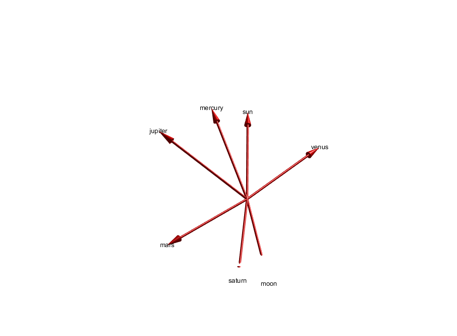
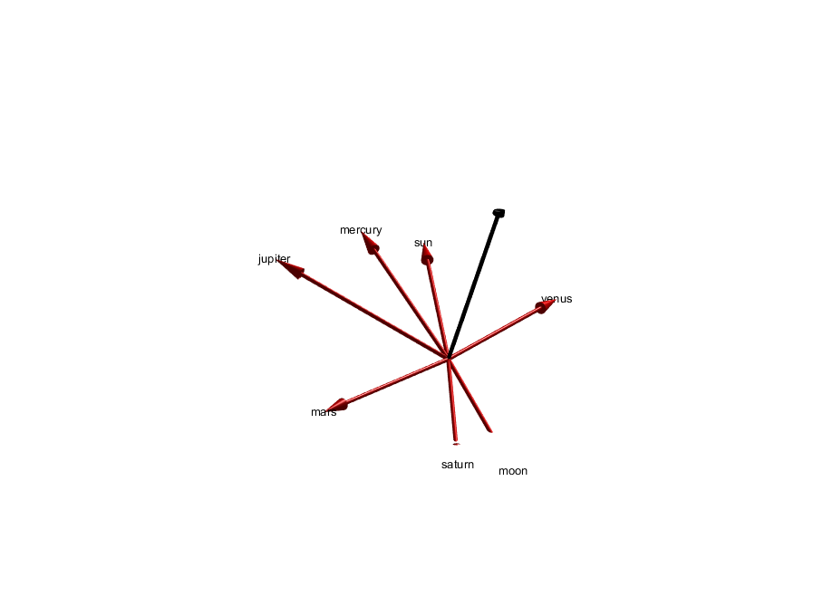
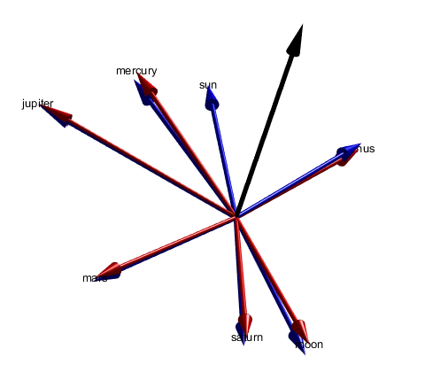

Contents
% Sky Clock calculations % FIXME: this hasn't been debugged yet. Trying to get the sign right on % theta.
Positions of [sun mercury venus earth moon mars]
p = [ ... 98737.65714089875 -322333.36244940694 -153695.74901326824 6941996.601020642 40110318.72735843 20735265.058509897 107376698.98967445 16606844.809812635 674753.2904573642 102641024.09369242 97848513.33584224 42404420.99743636 102797481.67090186 97531216.1543806 42302953.91258208 -164532329.9741314 165301295.37539384 80258023.65923128]; n = {' sun',' mercury',' venus',' earth',' moon',' mars'}; for i = 1:size(p,1) plot3(p(i,1),p(i,2),p(i,3),'r.'); text(p(i,1),p(i,2),p(i,3),n{i}); hold on end hold off pe = p(4,:); p = p([1 2 3 5 6],:); pe = pe([1 1 1 1 1],:);

Subtract the location of earth
p = p - pe; % p is now a geocentric view of the inner planets plot3(p(:,1),p(:,2),p(:,3),'.');
psun = p(1,:); cosTheta = zeros(size(p,1),1); theta = zeros(size(p,1),1); for i = 2:size(p,1) plot3([psun(1) 0 p(i,1)],[psun(2) 0 p(i,2)],[psun(3) 0 p(i,3)]) hold on cosTheta(i) = dot(psun,p(i,:))/(sqrt(dot(psun,psun))*sqrt(dot(p(i,:),p(i,:)))); theta(i) = acos(cosTheta(i)); end hold off % In degrees... theta*180/pi
ans =
0
13.5400
46.8712
69.1380
62.2965
 i = 1; body = 'sun'; plot([0 cos(theta(i))],[0 sin(theta(i))]); text(cos(theta(i)),sin(theta(i)),body); hold on i = 2; body = 'mercury'; plot([0 cos(theta(i))],[0 sin(theta(i))]); text(cos(theta(i)),sin(theta(i)),body); i = 3; body = 'venus'; plot([0 cos(theta(i))],[0 sin(theta(i))]); text(cos(theta(i)),sin(theta(i)),body); i = 4; body = 'moon'; plot([0 cos(theta(i))],[0 sin(theta(i))]); text(cos(theta(i)),sin(theta(i)),body); i = 5; body = 'mars'; plot([0 cos(theta(i))],[0 sin(theta(i))]); text(cos(theta(i)),sin(theta(i)),body); hold off axis equal